Inicio
Qué hacer
Bares
Restaurantes
Hoy en Logroño
Historia
Qué hacer en Logroño
Guía local para disfrutar la ciudad sin prisas
🔍 Busca un plan
⭐ Rankings populares
✔ Qué hacer en Logroño de noche
✔ Mejores bares de Logroño
✔ Planes gratis en Logroño
✔ Qué ver en Logroño en un día
📍 Mapa interactivo
Todo
Bares
Planes
📸 Logroño en imágenes
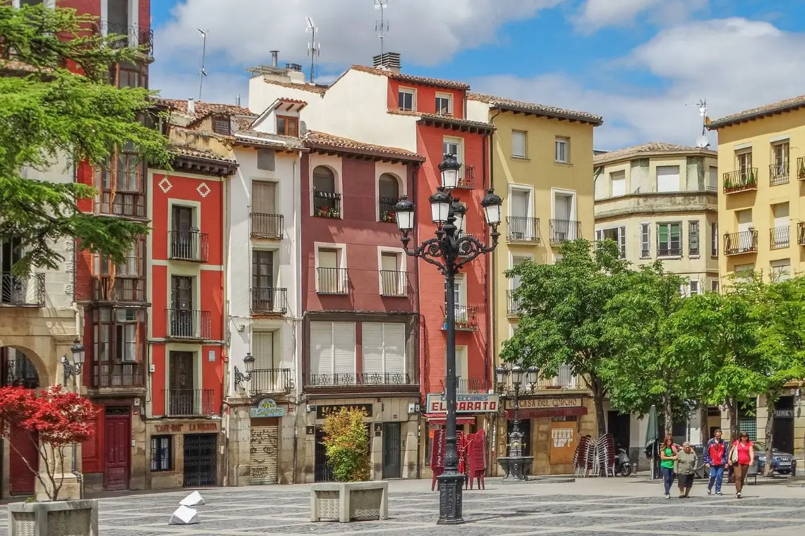
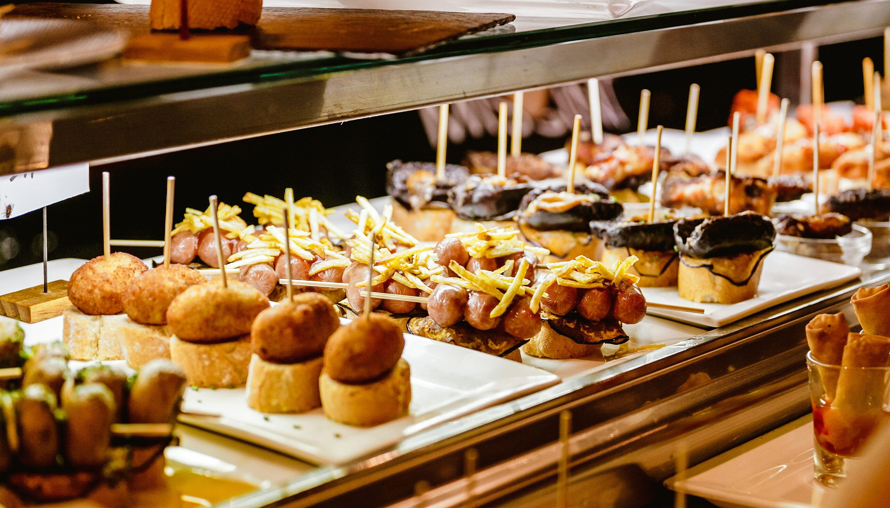 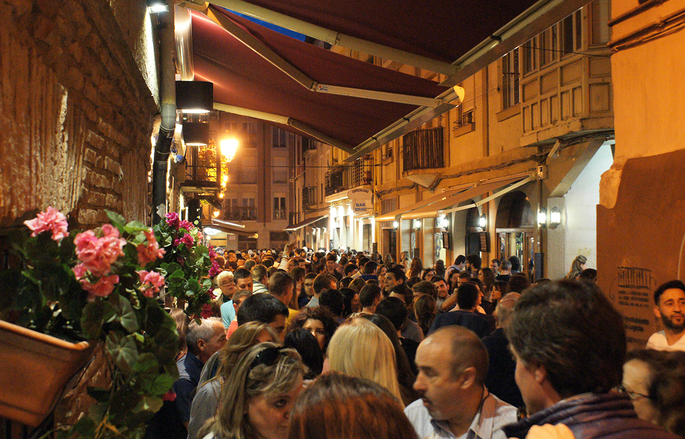
 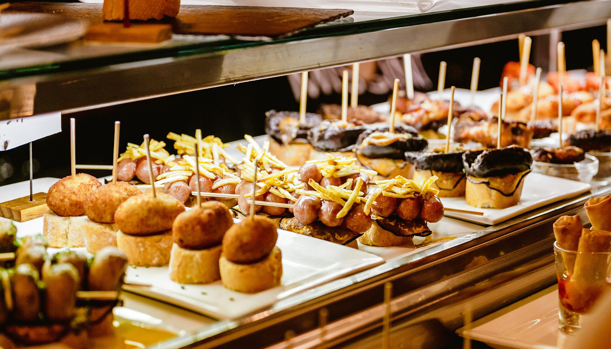
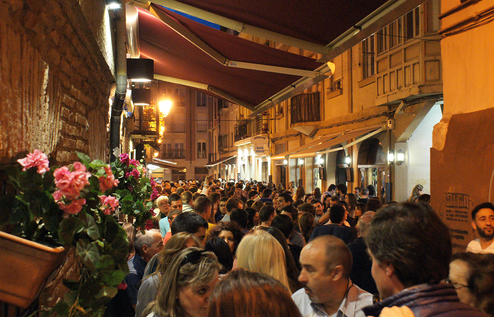
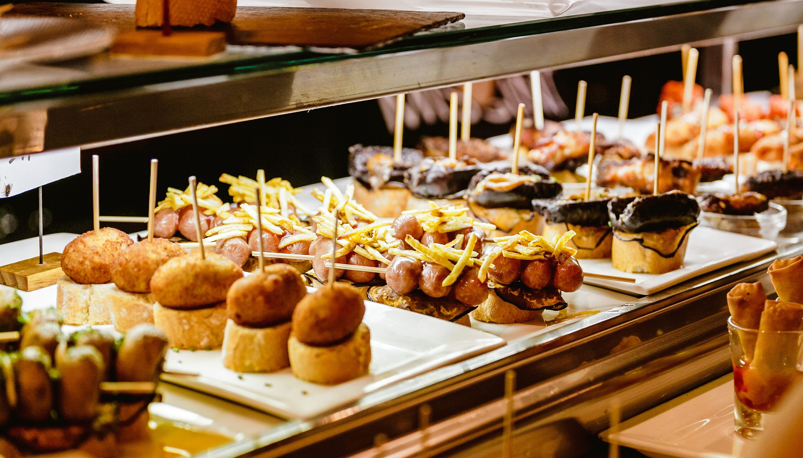
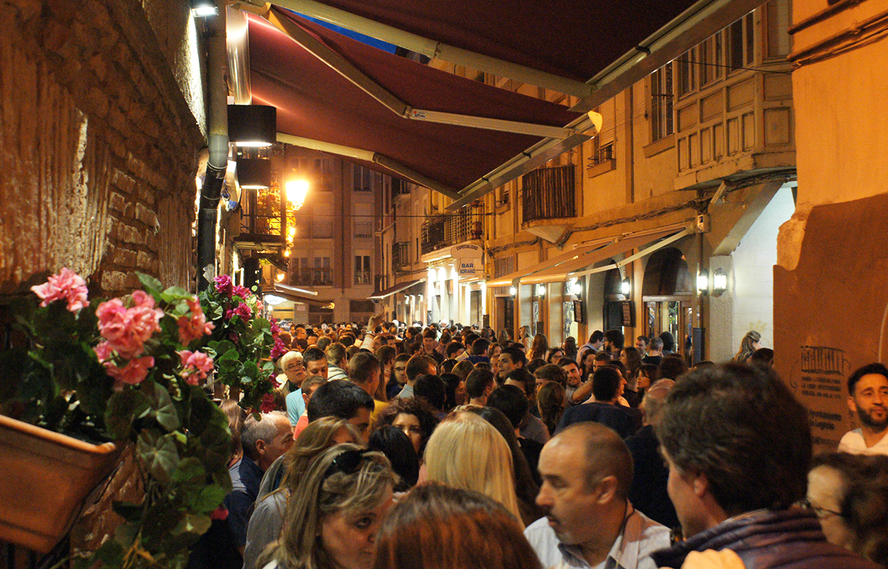
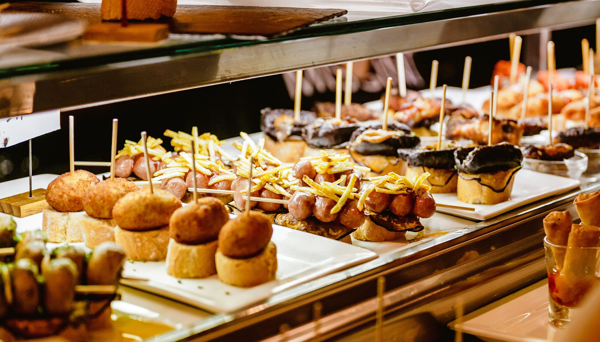
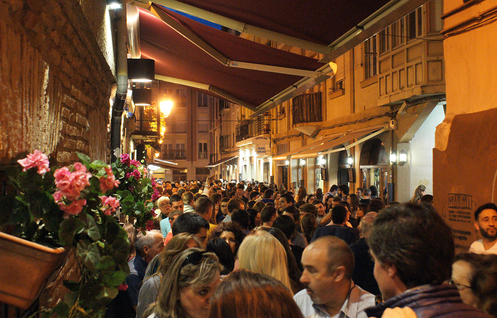
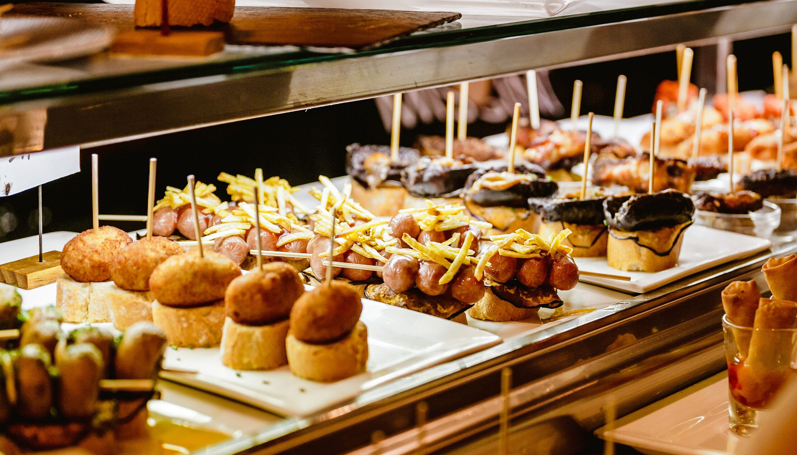
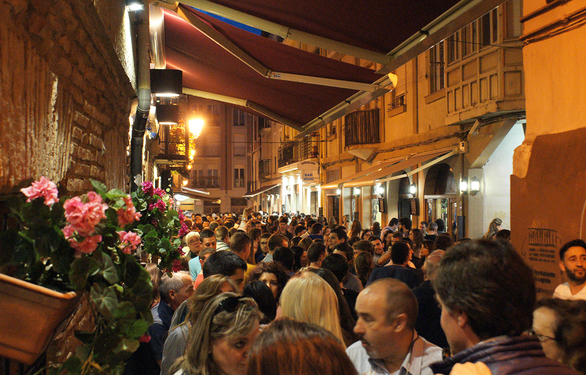
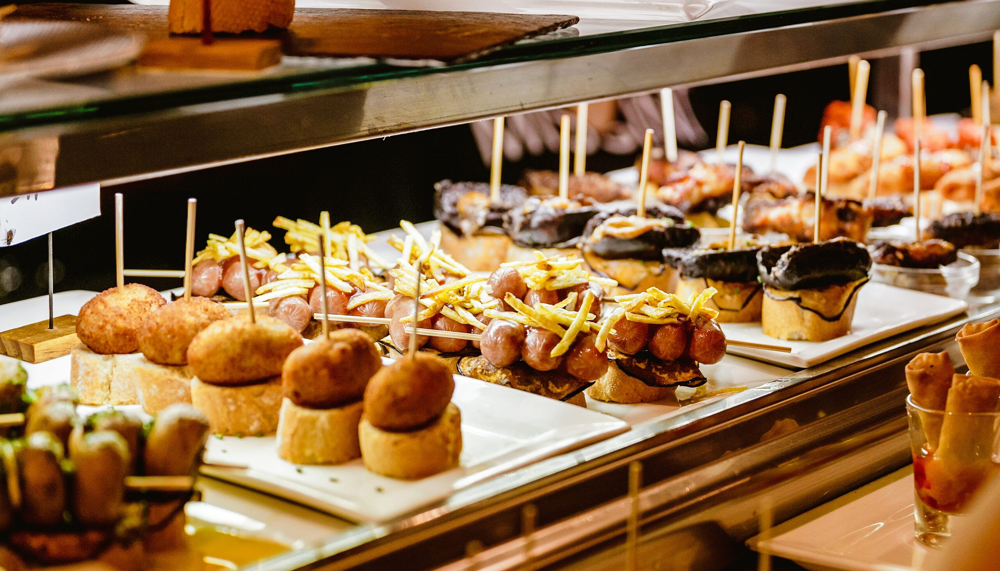
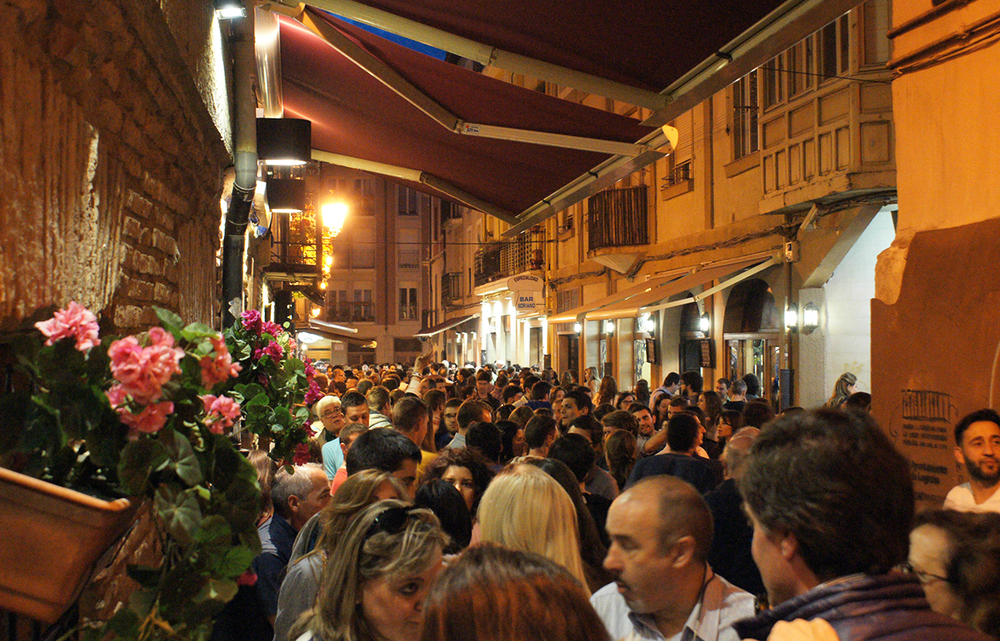
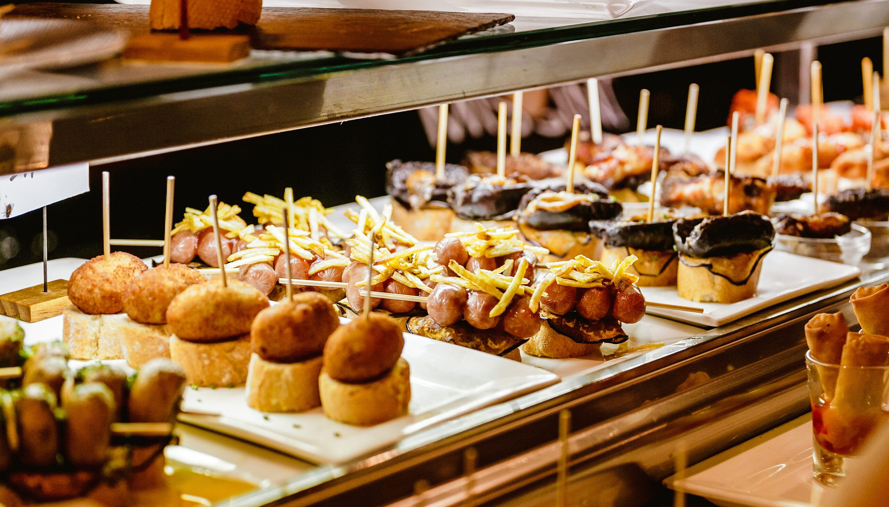
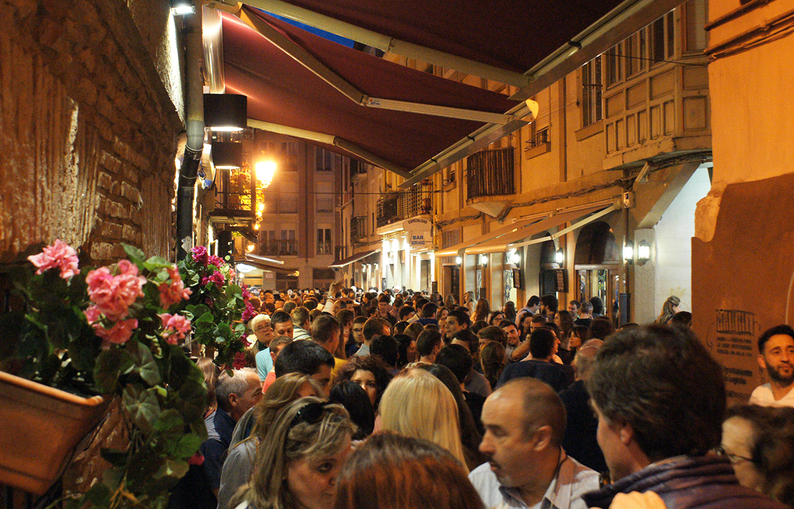